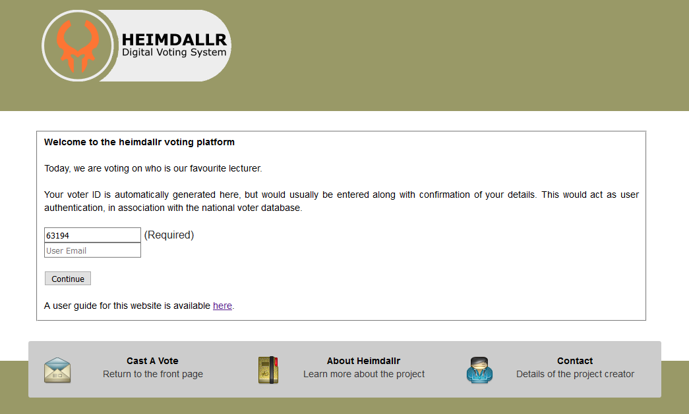
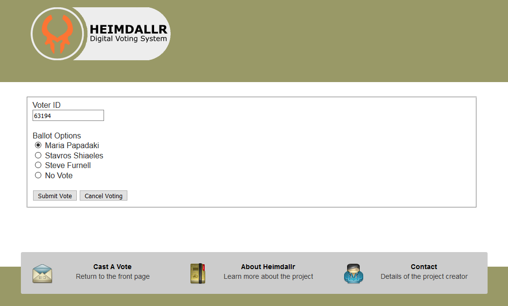
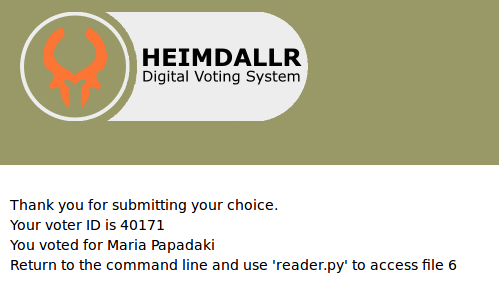
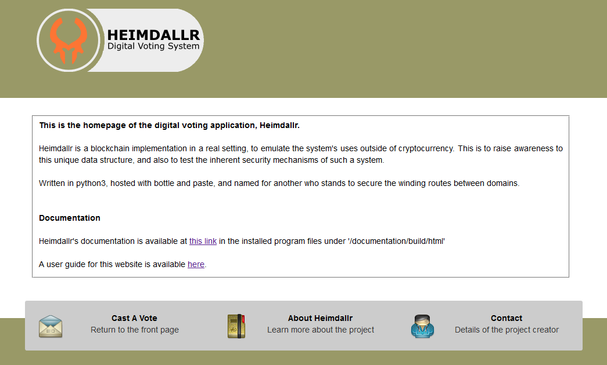
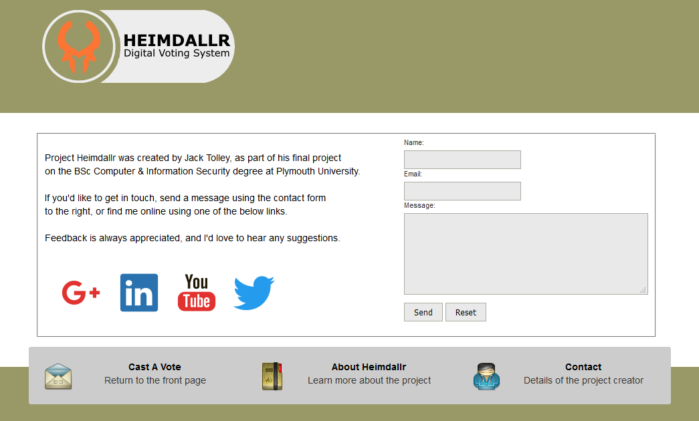
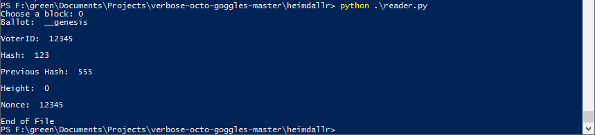

3.2. Hosting the Application¶
From the command line, in the root directory, run the (site.py) python file, providing as arguments the address and port of the next computer in the ‘chain’. Typically the port should be as high as possible, as using ports under 100 will require administrator privileges. The default value for this is [9999], and should match whatever the listening port on the other device is.
-
python3 site.py --address [-a] ADDRESS --port [-p] PORT
That’s it! The website is now hosted, and can be accessed by visiting http://localhost:8081/ in a web browser.
Usage help for (site.py) can be found by using the below command.
-
python3 site.py --help [-h]
3.3. Listening for Connections¶
From the command line, in the root directory, run the (listen.py) python file. This file takes three arguments. –address is the IP address of the device this machine is listening to, and should be the one whose (site.py) is pointed at this device. –updates takes the IP address of the machine which files will be sent to, and should match the direction that this device’s (site.py) was set up for. As with (site.py), the port should be set as high as possible, and will set the basis for the port which the entire blockchain uses.
-
python3 listen.py --address [-a] ADDRESS --updates [-u] UPDATES --port [-p] PORT
The device is now listening on the –address port for incoming connections. The console should update, should any incoming connections arise.
In the event that an incoming file is not validated, the listener will prompt the system to update. This will be reflected in the console, as the device will contact it’s previous host for the relevant files. If debugging is turned on, logs of the transferred files may appear.
If the listener receives an update from the forward device in the chain, an update package is prepared. This includes information of the current blocks in the chain, which the target device can use to repopulate their resources. This also allows for a new device to be added to the chain. This should be reflected in the console logs.
Usage help for (listen.py) can be found with the below command.
-
python3 listen.py --help [-h]
3.4. Using the Website¶
Accessing the application UI is done by visiting http://localhost:8081/ in a web browser. This will bring the user to the login page.
From the login page, enter identifying information (email address and provided voter ID number), and click Continue to proceed. This will bring the user to the vote page.
As of right now, there is a single election a user can take part in. To cast a vote, select an option using the radio buttons. To cast a vote, proceed by pressing the Submit button, and confirm.
The user will now be presented with a page thanking them for voting. For the sakes of debugging, this has some basic information about their vote, as well as a description of the block that was created. To cast another vote, use the navigation buttons along the bottom of the page.
The navigation buttons also provide access to some useful information, including this document, and a page describing the project and it’s goals.
3.5. Reading Files¶
Another application in the root directory that can be useful is the reader. This provides feedback on any given block, and should be used primarily for debugging. To access this, run the following command.
-
python3 reader.py
The reader takes no command line arguments, but will prompt the user for a number. The intention is that the user will enter the number provided to them after submitting a vote, but it can be used for accessing other files in turn.
3.6. Command Line Activation¶
It is possible to run the application directly from the command line, skipping the website application. Needless to say, this is intended purely for debugging purposes. To do so, run the (main.py) file from root, using the same arguments provided to (site.py).
-
python3 main.py --address [-a] ADDRESS --port [-p] PORT